COMMONGROUNDCAMPUSOn campuses across the country
Dialogue
over division
Events where people talk with each other, not past each other
commongroundcampus.com

COMMONGROUNDCAMPUSEvents where people talk with each other, not past each other